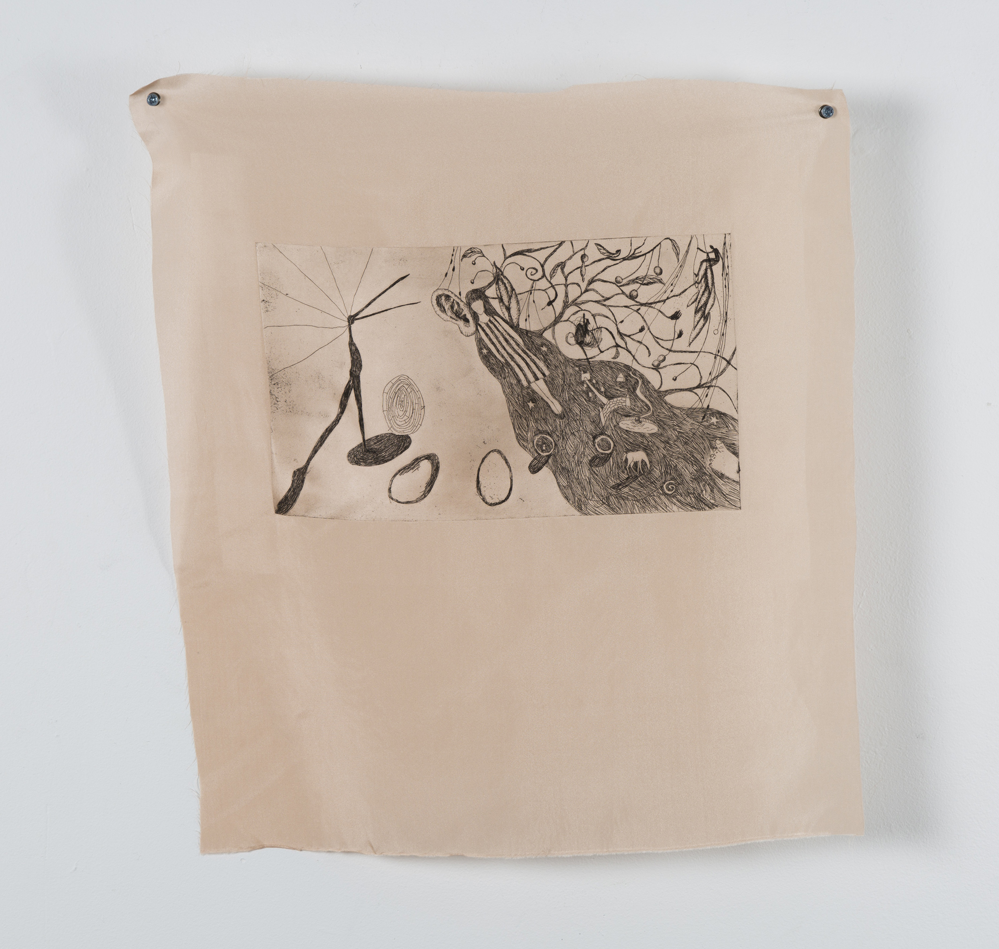
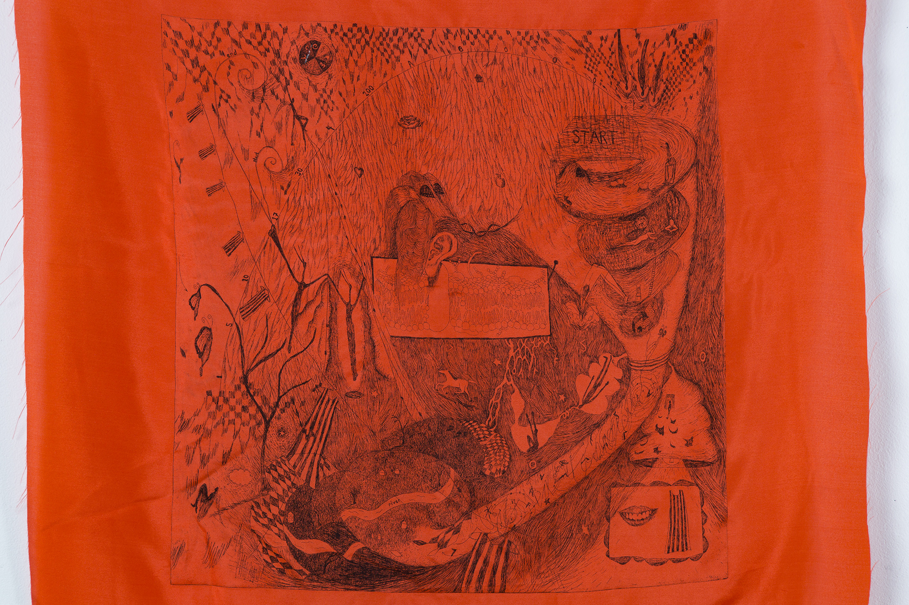
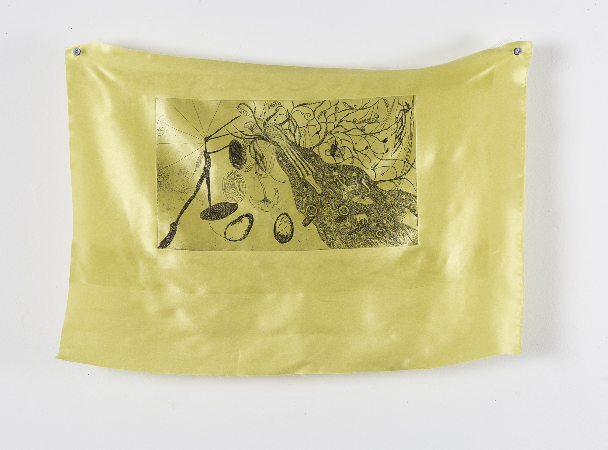
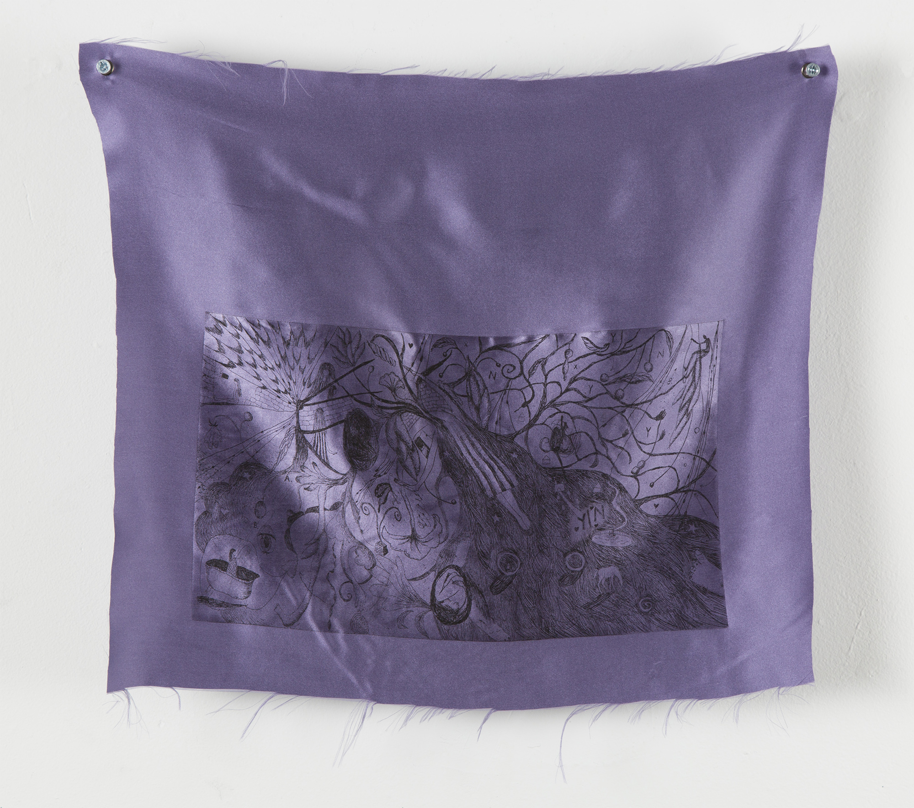
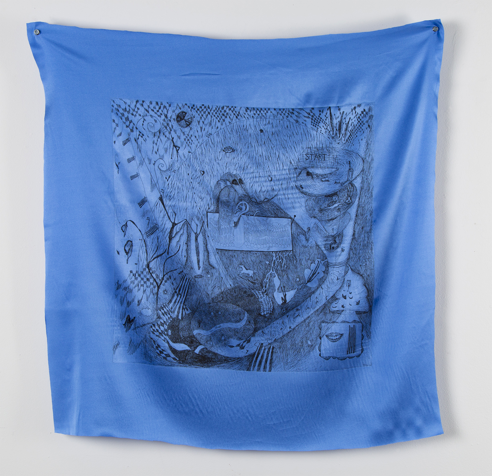

GOODBYE TO PICTURES
MFA thesis exhibition at Pratt Institute
200 Willoughby Ave. Brooklyn, NY
Apr. 22 - 26, 2019
Tracing the lives of multiple aspects of my identity through characterization, personal myth, and performance.
The GIRL traverses the realms of language and landscape to find herself. The BIRD, first conceived in NAUTILUS FREE LOSSY (2018), wanders around an otherworldly landscape, glimpsed through the quilted hole of a textile screen. The PICTURE MAKER holds court. She stands at the center, pouring drink for those who approach her.
As written about by Anne S. Rogers:
"The Picture Maker has trapped the image of the Bird in her world, constraining its roaming to a small space that is only one stop on the journey towards the reward that she promises.
Fu describes the Bird as being eager to experience the world, as free, as present in the space they occupy. The Picture Maker, however, is putting on appearances. The Picture Maker is spatially trapped by the table that surrounds her—it allows her to lure people in with the promise of a sweet drink, and maintains her presence as a certain image, but it also restricts her movement, and her ability to interact with the world. She cannot experience the freedom of movement that the Bird has when she is in this role. This brings up questions about how we behave when we're fully present in the world and unconcerned with how others perceive us, as compared to when we're focused on creating appearances that will influence how we're remembered in the future."
PC Jennifer Ho

The self as eternal light, scattered prismatically onto the earth and others, hand sewn textile, 108"h x 96"w, 2019.

Entrance to the exhibition.

Installation view.

The Picture Maker holding court with a pitcher of lemonade, offered to those who visit with a cup from the Tower of Cups.

Tower of Cups, sumi ink on 372 paper cups, dimensions variable, 2019.
The Picture Maker pours an offering.

Detail of The self as eternal light, scattered prismatically onto the earth and others.

Detail showing a plush hole through which a projected video of the Bird can be seen (see below).

Welcome mat found outside the Well Wishes Well, hand sewn textile, 23.5"w x 16.5"h, 2019.

Girl's Theme, Variation A, etching on silk, plate dims 7.25"w x 14"h, 10.5"w x 14"h, 2019.

Detail of Girl's Theme, Variation B, etching on silk, 2019.

Girl's Theme, Variation C, etching on silk, 2019.

Girl's Theme, Variation D, etching on silk, 2019.

Girl's Theme, Variation E, etching on silk, plate dims 7.25"w x 14"h, fabric 10.25"w x 12.25"h, 2019.

Girl's Theme, Variation F, etching on silk, plate dims 17" x 17", fabric 21" x 21", 2019.

Detail of Girl's Theme, Variation F.